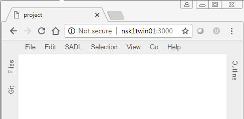
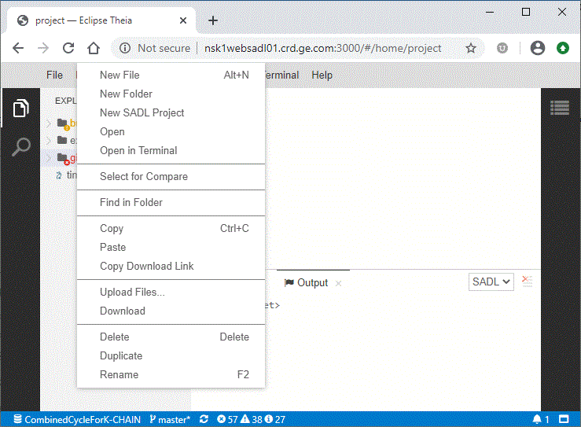
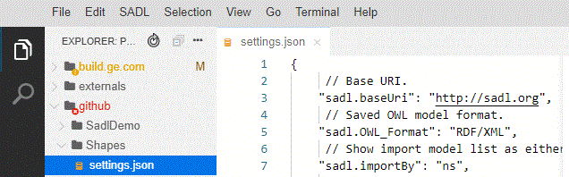
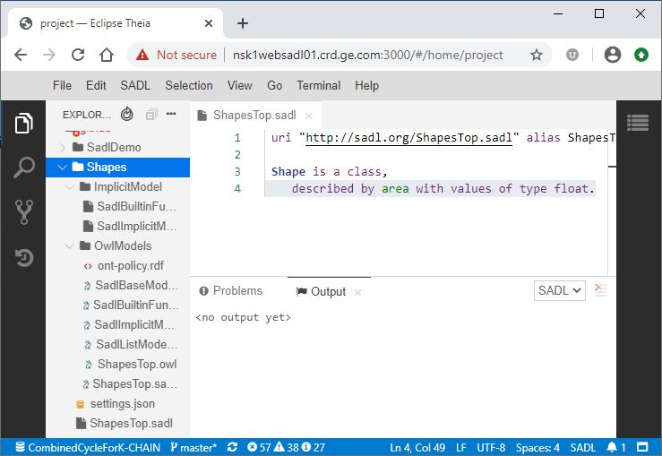
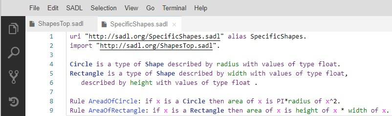
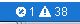

Web SADL is a set of services that allow a SADL IDE to be instantiated in a Web browser. The functionality mirrors that of the Eclipse-based SADL IDE. Web SADL features include the following.
Authoring of SADL model files in a feature-rich text editor.
Live model instance validation.
Generation (OWL, N3, and NT) based on valid SADL models.
LS based semantic highlighting.
Navigation between the SADL model elements.
Content assist in the SADL editors.
Downloading and managing external SADL resources into the workspace.
Preferences.
Testing and querying SADL models.
Reviewing the output of any SADL model via Ask and Test statements.
Collaboration with the Theia Git extension.
This document is primarily about using Web SADL in a browser. For more information about setting up the Web SADL backend services, please see Web SADL Backend.
The Web SADL client will run in a Web browser. Chrome is recommended and it the browser that has been used in testing.
Connect to the Web SADL backed by entering the service URL of the form "http://<host>:<port>, e.g.,
The result should be a browser tab with menu items across the top and down the left and right sides as shown below.

To create a new SADL project, click on "Files" on the left-side menu to show the file system. Select a folder, e.g., "project", and right-click to obtain a popup menu. Note that the Files view can be made invisible by clicking on "Files" again.

Click on "New SADL Project" to create a SADL project. Name your project as requested. For purposes of this tutorial, you might want to name it "Shapes".

Note that the "settings.json" file contains the project settings and can be opened in an editor by double-clicking on the name or by right-clicking for a popup menu.
Now that we have a SADL project, we can begin to create SADL model files. Right-click on the project name (e.g., "Shapes") and select "New File". In the naming dialog give the file a name ending in ".sadl", e.g., "ShapesTop.sadl". The result will be a new SADL model file opened in a SADL editor window. This editor window will have content assist, error and warning markers, hyperlinking, etc., just like the Eclipse-based SADL IDE. Holding down the Control key and pressing the space bar activates content assistance.
Pressing the Enter key will insert the selected suggestion into the model file.
Defining a class "Shape" which is in the domain of property "area" with range "float" results in the following state of the project.

Note that an "OwlModels" folder has been created containing the translated model for our newly created model as well as several other files. The "ImplicitModel" folder contains the definition of the built-in functions supported by the selected reasoner. It also contains the SadlImplicitModel. These two editable files, along with SadlBaseModel.owl in the OwlModels folder, are implicitly imported by every SADL model.
To complete our simple demo project, we create a second SADL model file which imports the first and defines Circle and Rectangle as subclasses of Shape with defining properties. Finally we add a couple of rules to compute the area of these types of Shape.

Search can be local to a particular file, in which case it can be initiated with control-f or Edit -> Find on the menu bar. In either case, a popup allows text to be entered and arrows allow movement from one matching occurrence to the next. The in-file text search dialog can be dismissed by clicking on the "x" in the upper right corner. Find and replace within a file works similarly.
Searching the workspace is initiated with control-shift-f or Edit -> Search In Workspace. The result will be the appearance Search tab on the left and a list of all of the matches to the entered string in the entire workspace. Each occurrence is a hyperlink which, if clicked, will open the file containing the match and highlight the matching text in that file. Icons near the text input box allow additional control of the search.
The bottom panel in the browser can contain any of several tabs. The bottom panel can be toggled in or out of view by clicking on the white rectangle at the right end of the bar at the bottom of the browser. The "SADL" before the rectangle indicates that the current language is SADL.
The Output tab shows the results of running queries and testing models.
The "Problems" tab shows a list of errors and warnings hyperlinked to the location where each occurs. This tab is made visible by clicking on the errors or warnings icon on the status bar across the bottom of the browser window, as shown below.

The icons shown indicate that there is 1 error and 38 warnings in the current workspace.
The "Terminal" tab is a bash command window which can be used to do more complex git operations.
We can test our model by creating a SADL file which contains some instances of Shape and some tests to verify that the rules compute correct areas.

By clicking on the "SADL" top menu item and selecting "Test Model", with the editor focus on TestShapes.sadl, we can run inference. The results are displayed in the Output window and include the test results.

Git can be set up on the server machine so that it uses the config information (e.g., user) from a local git repo which is the current directory or a parent thereof.
The "Git" tab on the left allows adding files to tracking and committing changes, as well as comparing a changed file with ??
A terminal window opened up in the browser interface allows other git operations such as cloning, pushing.
The Git configuration on the server should be done by, so that the config file is in the same user home folder, the same user who starts the backend.
Any one who has access to the service through the browser interface can execute commands in the terminal window and any git actions affecting a remote repo will be done in the name of the local user of the current local git repo.